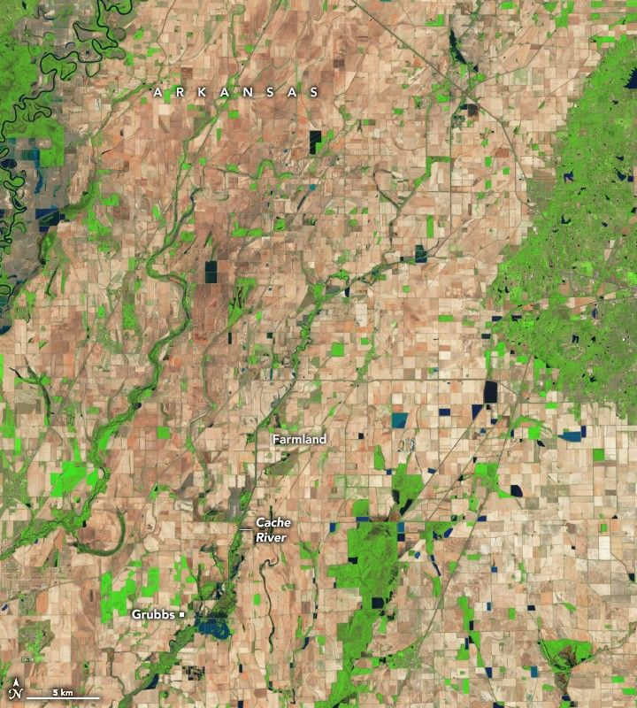

Arkansas Farmers Face Lingering Floodwaters
After a slow-moving weather system swamped the Midwest U.S. in early April 2025, many rivers’ water levels soared to near-historic levels. Arkansas was particularly hard hit, with floodwaters spilling across rural landscapes in the Arkansas Delta, a region where commodity crops such as rice, corn, soybeans, and wheat are widely grown. Many farmers still faced high water levels more than a month after the flooding began.
“This is one of the largest, most dramatic, and long-lasting agricultural floods we’ve seen in Arkansas in decades,” said Jason Davis, a remote sensing expert with the University of Arkansas System Division of Agriculture Cooperative Extension Service, noting that the April 2025 flood exceeded the severity of floods in the state in 2018, 2019, and 2023.
The OLI-2 (Operational Land Imager) on Landsat 9 captured this false-color image (right) showing flooding along the borders of Craighead and Jackson counties in northeastern Arkansas on April 13. For comparison, the other image shows the same area on April 17, 2023, when water levels were much lower. The images combine shortwave infrared, near infrared, and red light (bands 6-5-4) to make it easier to distinguish water (blue) from land (brown) and vegetation (green).
The Cache River crested at Egypt on April 10, but floodwaters lingered as water from upstream worked its way through the watershed, breaching a key levee and pooling in poorly drained areas. Joe Christian, a rice and soybean farmer along the Cache, chronicled the state of his farm as floodwaters overwhelmed it.
Posts on X showed an aerial photo of his flooded storage shed, young plants that were submerged for days, and muddy rows he simply describes as “toast.”
In the Landsat imagery, notice how the river widens a few kilometers upstream of Grubbs. “That’s the line where ‘channelizing’ and ‘dredging’ of the river stopped in the 1970s,” Christian said. “North of Grubbs, we get floods almost every year now.”
Astronauts aboard the International Space Station also captured several photos showing the scope of flooding in Arkansas. One image shows flooding along the White River in Jackson County near Newport and Bradford on April 15.
Many Arkansas farmers got an early start on planting this spring, thinking it would lead to bumper harvests in the fall, explained Jarrod Hardke, a rice agronomist for the extension service. Instead, many farmers will likely muddle through a season that brings lower-than-usual yields.
Rice is more flood-tolerant than corn or soybeans, “but there’s a limit to that tolerance,” Hardke said. The chance of rice surviving “can drop dramatically” after being submerged for 10 days. If floodwaters cover the ground before young rice plants emerge, they can die even sooner.
Hardke and Davis estimated that the deluge inundated about 30 percent of the 839,000 acres that farmers had planted, amounting to losses of $79 million. Some wheat will be a total loss, while corn, soybeans, and rice will have to be replanted.
Replanting costs are significant: $11 million for corn, $10 million for soybeans, and $21 million for rice. These costs include new seeds, herbicides, diesel fuel, and fertilizer. An aerial image taken by a local farmer shows flooded fields and roads along the Cache River.
“I don’t think most people realize how much time, money, and energy goes into every acre of crop that gets planted,” Davis said. “It’s expensive—a complete nightmare,” Christian added, noting that the flood killed all of his soybeans and 55 acres of rice.
Davis is using satellite observations to validate and supplement the extension team’s crop damage estimates, which are typically based on farmer surveys. Satellite imagery helps assess the scope of flooding quickly, even when survey response rates are low.
Davis uses imagery from multiple sources, including Planet, NASA, the U.S. Geological Survey, and the European Space Agency. He combines flooded area maps with crop-type data to calculate damage estimates, then shares findings with state and federal officials to support disaster response.
An aerial photograph shows white sandbags filling a gap in an earthen levee, with muddy floodwaters spreading across surrounding farmland. As the flood situation evolves, the extension team continues to use satellite imagery and ground observations to update damage estimates for farmers and policymakers.